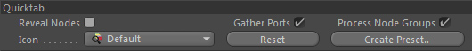
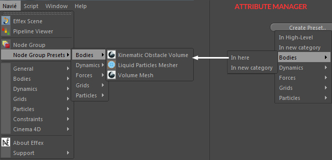

Quicktab
Quicktab

Reveal Nodes
If activated it will reveal all the grouped nodes in the Object Manager.
That way you can always go back into the low-level nodes.
Gather Ports
If activated (default) all the node ports (link fields) of all grouped nodes will be gathered into a single
group named 'Ports' (inside the Parameters tab).
Process Node Groups
If deactivated other Node Groups that you drop as a child will NOT be included in the grouping.
This is a convenience setting. You could also attach a Stop tag to the Node Group.
Icon
You can choose a custom icon for this Node Group.
The first entries (until the first separator) are icons of the grouped child nodes.
You can also select a custom icon but it will only be available once you restart Cinema 4D
unless it is an icon already used in Cinema 4D.
Reset
This will reset the whole Node Group and all the changes
made with the Node Styler.
Why would you ever use it then? Well, if you rearrange
the child nodes' order and click reset, it will also reset the order
of the node specific subgroups in the AM.
Create Preset..

Click on this button to store this Node Group (and all its children)
as a High-Level Preset node and appear in the according menu inside the Navié menu!
You can create new menu categories via this button as well.